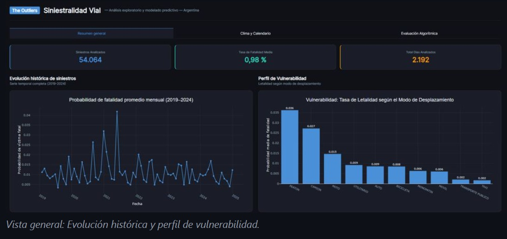

Proyectos
Estas 3 áreas son un muestreo acotado de distintos aspectos de mi formación y mi experiencia en tecnologías. El proyecto integrador combina conceptos y herramientas de varias de ellas para crear una solución completa y funcional.
WEB 2
🐾 Tienda Mascotas + TinderPet
Se destacan el catálogo de productos, el carrito de compras y la sección de adopciones.
🐾 Tienda Mascotas
Frontend estático con catálogo renderizado desde JavaScript y carrito de compras listo para conexión a medios de pago.
🐶 TinderPet
Sección de adopciones que carga animales (desde JSON para demo) y permite filtrar por tipo, tamaño y edad. Es la base de diseño de un protoagente.
🌙 Violeta: Astrología y Tarot
Landing page responsive para presentar servicios de astrología y tarot.
🌙 Violeta
Servicios presentados en tarjetas y testimonios cargados dinámicamente (desde JSON para el demo).
Desarrollada con HTML, CSS, Bootstrap 5.3.3 y JavaScript.
El botón de WhatsApp conserva un número de ejemplo, listo para conexión real.
WEB 3
🧪 SimpleDEX
dApp con front en React que permite operar con un contrato deployado y verificado en Sepolia de intercambio de tokens.
🧪 Interacciones del SC
Conecta una wallet compatible con MetaMask para agregar o retirar liquidez, intercambiar tokens en ambos sentidos y consultar precios.
La interfaz usa Web3.js, todos los contratos están desplegados y verificados en Sepolia. Los SC de tokens utilizan ERC-20 y el contrato de intercambio implementa la lógica de liquidez y swap de tokens.
🌐 Ver sitio publicado
🔍 Ver en Sepolia
🪙 TokenA
🪙 TokenB
📁 Repo en GitHub
🔐 zkCheck
Prototipo de elegibilidad privada con Zero-Knowledge en Midnight. Desarrollado en el marco de la Hack BsAs (48 hs - Agosto 2026).
🔐 Verificación privada
El contrato Compact explora cómo comprobar condiciones de elegibilidad sin exponer los datos privados usados para evaluarlas.
El proyecto está en desarrollo: el contrato está listo y pasa los 7 tests, la interfaz actual usa funciones mock y todavía no completa el flujo con el contrato.
DATA & AI
🛸 OVNI Sightings
Análisis exploratorio y de series temporales sobre registros de avistamientos usando SAS Viya.
🛸 OVNI Sightings
Proyecto grupal de The Outliers*, integra registros de Kaggle y datos argentinos recopilados mediante scraping, con preparación de datos para visualizaciones y series temporales, forecasting con ARIMA e implementación de criterios de accesibilidad (contraste y paleta de colores).
El análisis estudia los registros disponibles; no predice fenómenos extraterrestres.
🚦 Siniestralidad vial en CABA - 2019 a 2024
Análisis de siniestros viales y variables meteorológicas con experimentación de modelos de ML: Random Forest y Regresión Lineal.

🚦 Datos, clima y modelos que fallan
Proyecto grupal de The Outliers* sobre datos de CABA (2019 a 2024), adicionando información climática y de calendario (días de la semana y feriados).
Compara enfoques de machine learning sobre un conjunto severamente desbalanceado; el foco está en el análisis y la interpretación crítica mostrando la dificultad de trabajar con un dataset poco equilibrado, no en afirmar un rendimiento predictivo alto.
*The Outliers: Marian + Claudia. Un equipo de dos, explorando datos, modelos y nuevas formas de entender lo que nos rodea.
Proyecto Integrador de Tecnologías (end-to-end)
"Ponele Música a tus Emociones"
App que brinda a los usuarios una experiencia inmersiva: el visitante recibe una frase y música acorde al sentimiento/emoción dominante detectado en la fotografía suministrada. Simultáneamente, la página toma colores relacionados a este evento.
Se entrenó un modelo de Deep Learning (DenseNet121) para la detección de emociones en imágenes. Inicialmente se trabajó con Keras y el dataset Fer2013. Luego se migró a PyTorch, utilizando el dataset RAF-DB. Al conjunto de entrenamiento hubo que aplicarle técnicas para mitigar el desbalance de clases. La selección de música proviene de un banco que contiene una recopilación de segmentos musicales libres de copyright asociados a la clasificación de emociones. La app fue desarrollada con xxx y desplegada en xxx.
Tecnología, comunidad y otras ideas peligrosas
Además de desarrollar proyectos, me interesa construir comunidad y compartir conocimiento. Escribo sobre tecnología, datos e IA en LinkedIn y Medium, y participo en iniciativas orientadas al aprendizaje colaborativo.
- Leo, escribo, reflexiono y publico sobre tecnología, datos e IA en LinkedIn y Medium.
- 2022 - Formé parte del grupo de estudiantes que organizó los grupos de materias en la comunidad del ISPC
- 2025 - Creé y co-administro una comunidad de WhatsApp utilizada por estudiantes de Ciencia de Datos en la UdelaCiudad
- 2026 - Fui nombrada AWS Student Builder Group Leader & Founder en la UdelaCiudad